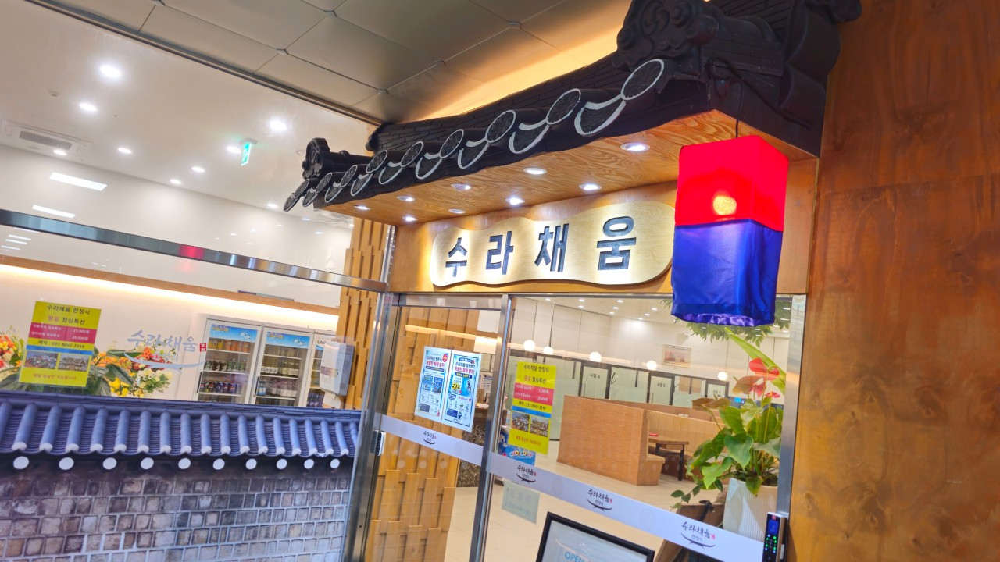

소상공인 온라인 마케팅 현황진단
수라채움 · 시흥 거북섬
네이버플레이스, 검색노출, 블로그, 인스타그램, 예약·배달, 광고 흔적과 리뷰 평판을 한눈에 정리한 실무형 보고서
조사기준 2026.08.16
네이버 플레이스 ID 1159852496
업종: 한정식 · 한식
지역: 경기 시흥시 거북섬

시흥 수라채움 매장 입구 · 제공 이미지
1. 한눈에 보는 진단
핵심 강점오션뷰 + 가족모임넓은 주차·단체룸·격식 있는 한정식
주요 운영채널네이버 + 인스타예약 전환과 사진형 콘텐츠 중심
광고 확인유료광고 미확인검색광고·SNS 광고의 공개 흔적 부족
가장 큰 과제검색 → 예약 연결리뷰·블로그·콘텐츠를 예약으로 더 강하게 연결
핵심 판단: 수라채움은 경쟁 한정식점보다 인스타그램과 네이버 예약 활용도가 좋은 편입니다. 다만 검색광고, 공식 블로그, 리뷰 응대 체계가 약해 “좋은 매장인데 온라인 전환 장치가 아직 덜 갖춰진 상태”로 판단됩니다.
2. 온라인 채널 맵
네이버플레이스운영 확인
매장정보·사진·메뉴·예약 기능
유료광고미확인
검색·SNS 광고 공개 흔적 없음
| 채널 | 현황 | 주요 활용 | 판정 |
|---|
| 네이버플레이스 | 업체정보, 메뉴, 사진, 예약 노출 | 검색 → 정보확인 → 예약 | 직접 운영 확인 |
| 인스타그램 | 공식 계정 @sura.chaeum, 팔로워 약 972명 | 상차림·반찬·매장·모임형 메시지 | 직접 운영 확인 |
| 블로그/후기 | 개인 블로그 후기 다수 검색됨 | 오션뷰·가족모임·상견례·주차 강점 확산 | 자연노출/협찬 여부 미확인 |
| 배달 플랫폼 | 배민·쿠팡이츠 등 주문 가능 문구가 SNS에서 확인됨 | 포장·배달 판매 | 공식 SNS 근거 |
| 페이스북 | 공식 페이지 미확인 | - | 미확인 |
| 틱톡/유튜브 | 공식 채널 미확인 | - | 미확인 |
3. 네이버플레이스 현황
- 위치: 경기 시흥시 거북섬둘레길 10 일대, 정왕동 거북섬권.
- 영업정보: 11:00~21:00, 브레이크타임 15:00~17:00로 확인되는 자료가 있음.
- 시설 강점: 넓은 주차공간, 대형룸, 유아의자, 단체모임 대응.
- 예약: 네이버 예약 기능을 활용하는 것으로 확인되며, 가족모임·상견례·단체룸 수요와 궁합이 좋음.
- 대표 메뉴: 귀빈 한상차림, 코다리찜 한상차림, 평일 점심특선 등 가격대별 상품 구성이 확인됨.
- 사진 자산: 입구, 실내, 상차림, 창가 오션뷰가 매장의 핵심 차별요소로 사용되고 있음.
개선 포인트: 플레이스 소개문구를 “한정식” 중심이 아니라 가족모임 · 부모님식사 · 상견례 · 단체룸 · 오션뷰 · 넓은 주차 중심으로 재구성하면 방문 목적형 검색에서 전환력이 더 좋아질 가능성이 큽니다.
4. 인스타그램 운영 진단
공식 계정: @sura.chaeum
- 팔로워 약 972명, 팔로잉 약 1,562명 수준으로 확인.
- 한정식 상차림, 기본 반찬, 매장 전경, 가족모임형 메시지를 반복적으로 노출.
- #거북섬맛집 #시흥한정식맛집 #단체모임 등 지역·상황형 해시태그 사용.
- 사진뿐 아니라 릴스 형태 콘텐츠도 활용하는 흔적이 있음.
현재 잘하는 점
- “부모님과 함께 가는 식당”, “모임하기 좋은 한정식”이라는 고객 장면이 비교적 분명함.
- 상차림이 시각적으로 풍성해 이미지형 SNS와 궁합이 좋음.
아쉬운 점
- 단순 음식사진 비중이 높아질 경우 경쟁 매장과 차별화가 약해질 수 있음.
- 오션뷰, 룸, 주차, 상견례 동선, 부모님 생신 등 ‘방문 이유’를 설명하는 콘텐츠를 더 늘릴 필요가 있음.
- 프로필에서 네이버 예약으로 바로 이동하는 전환 동선은 현장 확인이 필요.
5. 블로그·검색노출 진단
공식 네이버 블로그는 뚜렷하게 확인되지 않았고, 검색 결과는 개인 후기 콘텐츠가 중심입니다.
| 후기에서 반복되는 표현 | 마케팅 의미 |
|---|
| 오션뷰 / 바다전망 | 거북섬 관광·데이트·가족 외식의 시각적 차별점 |
| 가족모임 / 부모님 | 핵심 타깃이 이미 후기 속에서 자연스럽게 형성됨 |
| 상견례 / 단체룸 | 고객단가가 높은 예약형 수요를 공략할 수 있음 |
| 넓은 주차 | 다인 가족·장년층·단체모임의 실제 구매장벽 해소 포인트 |
| 정갈함 / 친절함 | 한정식의 신뢰와 서비스 이미지를 강화 |
검색 관점의 핵심: 현재 고객 후기가 이미 “시흥 거북섬 가족모임 한정식”이라는 강한 검색 키워드를 만들어 주고 있습니다. 공식 콘텐츠가 이 흐름을 받아주면 검색노출을 더 안정적으로 만들 수 있습니다.
6. 광고·프로모션 운영 현황
| 항목 | 확인 결과 | 판정 |
|---|
| 네이버 검색광고 | 공개 검색에서 뚜렷한 광고 노출 흔적을 확인하지 못함 | 유료광고 미확인 |
| 네이버 플레이스 광고 | 공개 검색 기준 확정하기 어려움 | 확인 필요 |
| 인스타그램/메타 광고 | 광고 집행 여부를 공개 화면만으로 확정하기 어려움 | 확인 필요 |
| 블로그 체험단/협찬 | 후기 포스팅은 있으나 협찬·대행 여부를 확정할 근거 부족 | 추정 금지 |
| 배달앱 할인/쿠폰 | 입점 문구는 확인되나 상시 프로모션 여부는 미확인 | 확인 필요 |
※ 광고는 광고계정 내부를 보지 않는 이상 공개 검색만으로 100% 확인할 수 없습니다. 현장 인터뷰에서 월 광고비와 대행사 사용 여부를 반드시 확인해야 합니다.
7. 리뷰·평판 관리
- 다이닝코드 등 제3자 리뷰에서 전반적으로 긍정 평가가 확인됨.
- 긍정 키워드: 가성비, 정갈함, 친절함, 가족모임, 건강식, 경관.
- 미세한 개선 의견으로 솥밥 쌀 품질에 대한 언급이 확인됨.
- 공개된 리뷰에 운영자 답글이 활발한 흔적은 뚜렷하지 않음.
가장 쉬운 개선: 신규 리뷰에 48시간 이내 답글을 달고, 답글 안에 “가족모임”, “거북섬”, “상견례”, “오션뷰” 같은 매장 핵심어를 자연스럽게 포함하면 신뢰·검색·재방문 모두에 도움이 됩니다.
8. 경쟁 관점에서 본 위치
시흥 지역 유사 한정식점 3곳과 비교하면, 수라채움은 인스타그램과 예약 채널 활용이 상대적으로 앞선 편입니다. 반면 검색광고와 공식 블로그 자산은 아직 약합니다.
| 비교 항목 | 수라채움 | 일반 경쟁점 |
|---|
| SNS | 공식 인스타 운영 | 미운영 또는 소극적 |
| 네이버 예약 | 활용 확인 | 업체별 편차 큼 |
| 공식 블로그 | 미확인 | 대부분 약함 |
| 검색광고 | 미확인 | 대부분 적극적이지 않음 |
| 차별자산 | 오션뷰·룸·주차·모임형 | 맛·가격 중심 |
9. 우선순위별 실행과제
즉시 실행
- 네이버플레이스 소개문구 전면 개편
- 최근 리뷰 전부 답글 달기
- 대표사진을 오션뷰 + 상차림 + 룸 중심으로 재정렬
- 인스타 프로필에 네이버예약 링크 고정
30일
- 주 2회 콘텐츠: 부모님식사 / 상견례 / 생신 / 단체모임
- 네이버 블로그 또는 플레이스 소식 주 1회 발행
- 검색 키워드 5개 집중 관리
- 리뷰 요청용 테이블 안내문 제작
90일
- 소액 네이버 검색·플레이스 광고 테스트
- 시흥·송도·안산 가족모임 수요까지 상권 확대
- 릴스: 상차림 15초 / 오션뷰 / 룸 투어 시리즈
- 광고 → 예약 → 방문 전환 측정 체계 만들기
10. 현장 인터뷰에서 꼭 확인할 질문
□ 월 네이버 광고비가 있는가?
□ 플레이스 광고 또는 파워링크를 집행하는가?
□ 인스타그램은 대표가 직접 운영하는가?
□ SNS/블로그 대행사가 있는가?
□ 체험단·인플루언서 비용을 지출하는가?
□ 월 네이버 예약 건수는 몇 건인가?
□ 예약 고객 중 가족모임·상견례 비중은?
□ 배달앱별 월 매출과 수수료는?
□ 리뷰를 요청하는 현재 방법이 있는가?
□ 가장 마진이 좋은 대표 메뉴는?
□ 평일 점심과 주말의 고객구성이 다른가?
□ 3개월간 가장 늘리고 싶은 고객은 누구인가?
11. 주요 확인 출처
※ 본 보고서는 2026년 8월 16일 공개 웹정보를 기준으로 작성했습니다. 광고계정 내부 데이터, 네이버 스마트플레이스 관리자 통계, 배달앱 매출·프로모션 데이터는 사업자 확인이 필요합니다.